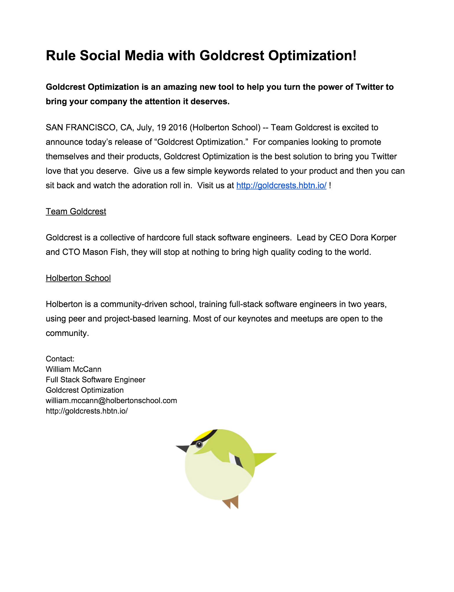
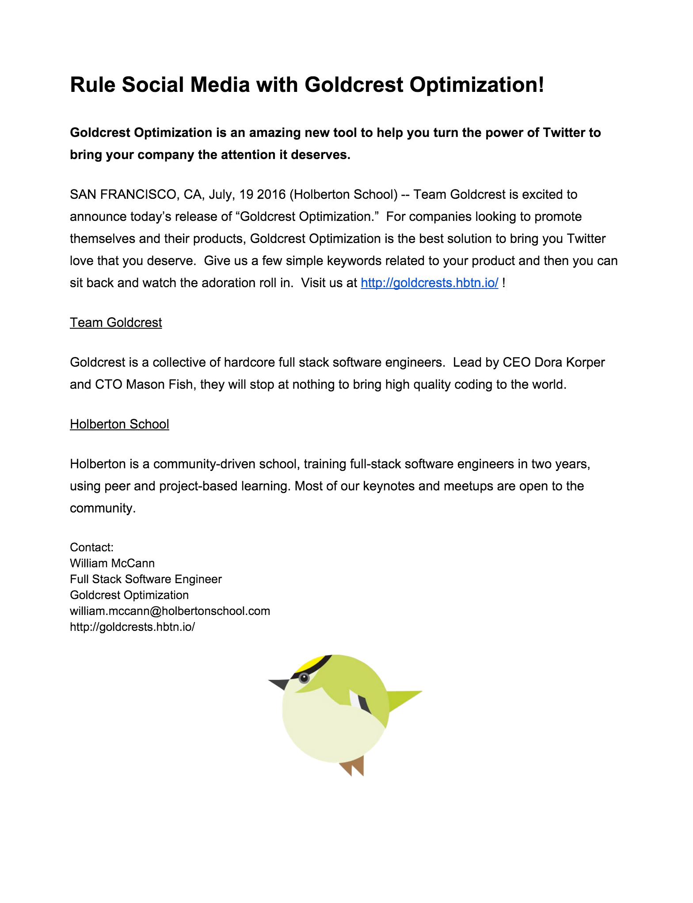

Welcome to
Goldcrest Optimization
Increase your Twitter followers and increase your social media presence with Goldcrest Optimization! Sign up with your Twitter account below.
Read our first press release!
Increase your Twitter followers and increase your social media presence with Goldcrest Optimization! Sign up with your Twitter account below.
Read our first press release!
